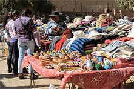

Purmamarca
Purmamarca es un pequeño pueblo de la Quebrada de Humahuaca donde se aprecia el Cerro Siete Colores.
Colores forma una de las postales más famosas del país.
Si bien Purmamarca es considerado un pueblo de paso, cada día son más los turistas que eligen hacer noche en el pueblo y conocer sus alrededores.
El pueblo de Purmamarca conserva la arquitectura colonial y las costumbres y tradiciones de los pueblos quebradeños. Es el destino de muchas personas que buscan descansar en un pueblo tranquilo y conocer los atractivos turísticos de la zona.
Viajar a Purmamarca
El pequeño pueblo de Purmamarca se encuentra sobre la Ruta Nacional 52 que se dirige al Paso de Jama (Frontera Argentina-Chile), a 4 kilómetros de la Ruta Nacional 9.
A Purmamarca llegan micros y colectivos de la capital provincial San Salvador de Jujuy y de otros pueblos de la Quebrada de Humahuaca.
Distancias desde Purmamarca a: San Salvador de Jujuy 66 km, Tilcara 27 km, Humahuaca 69 km, La Quiaca 225 km.
Coordenadas GPS: 23°44'00?S // 65°29'00?O